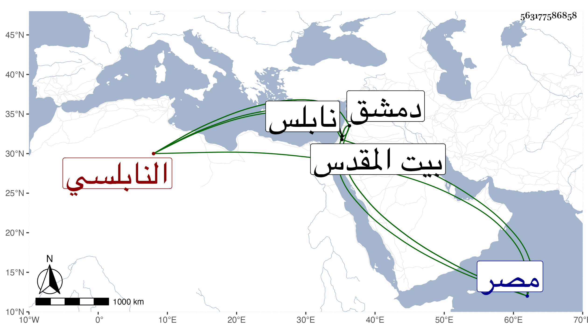

0902Sakhawi.DawLamic.ITO20230111-ara1.EIS1600.563177586858
Biography ID: 563177586858
إبراهيم بن أحمد بن ثابت النابلسي شخص من بني عبد القادر شيوخ نابلس نشأ بها فتعلم الكتابة وقرأ شيئا من القرآن وانتمى لقاضيها الشافعي أبي الفتح محمد بن الجوبري وخدمه بحيث صار يستعمله في الشهادات مع تكسبه في غضون هذا حريرا فترفع حاله يسيرا ثم سافر إلى دمشق وتردد للبلاطنسي وحضر عنده واجتهد في خدمته فراج هناك وحصل بجاهه وظائف في الجامع وانضم بعد موته للزين خطاب وربما حضر دروسه بل قرأ في الجرومية على أبي العزم الحلاوي ولكن لم يفتح عليه في شيء من ذلك بل تميز في المخاصمات . ونحوها وخدم عند العلاء الصابوني واستنابه في القضاء بدمشق وتكلم عنه في عدة جهات وتزايدت محاسنه في هذا النوع وذكر بين المباشرين ونحوهم وترقى لخدمة السلطان إلى أن كان من أكبر المرافقين للعلاء مخدومه حين نكب مع تكلمه بين الناس وبين الملك في الولايات والعزل والمخاصمات والمصادرات ونحوها فازدحم الغوغاء بل وكثير من الخواص ببابه وقطع ووصل وقرب وبعد وتسمى وكيل السلطان وهابه كل أحد وأضيفت إليه تداريس ومشيخات وأنظار وغيرها من الجهات وتمول جدا وصارت الجمالية لسكناه بقاعة مشيختها كدار وأتى الشرطة وكاد أن يخرب الديار الشامية بنفسه وبولده الآتي في الأحمدين إلى أن أمسك كل منهما في محل سلطته وأخذ منهما من الأموال والذخائر ما يفوق الوصف مع مزايدها بينهما وضرب هذا بين يدي السلطان ثم الدوادار الكبير حتى أشرف على التلف وحينئذ حمل من بيت الدوادار في قفص إلى الجمالية فلم يلبث أن مات على حين غفلة في يوم الثلاثاء ثاني عشر ربيع الأول سنة اثنتين وثمانين فغسل وكفن وصلى عليه ثم دفن بتربة عضد الدين الصيرامي واستقر بعده في تدريس الخروبية بمصر الشمس البامي وفي تدريس القطبية برأس حارة زويلة الشمس الجوجري وفي نظر المسجد المعروف بابن طلحة تجاه البرقوقية الشهاب بن المحوجب وفي نصف مشيخة الصلاحية ببيت المقدس ابن غانم وما تأسف عليه أحد ممن يميل إلى الخير على فقده بل هو مستراح منه مع منامات كان يخبر بها عن نفسه وأحوال نسأل الله خاتمة خير .
